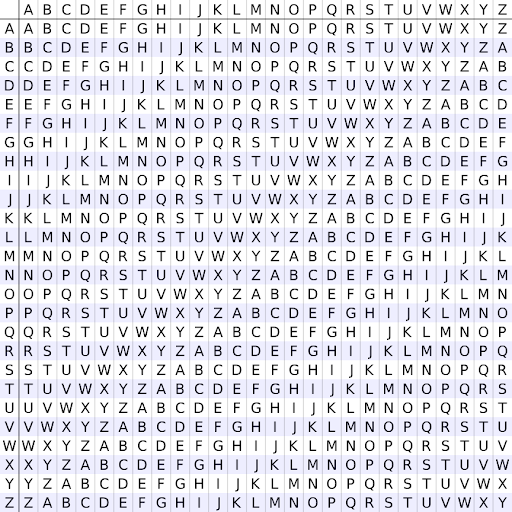
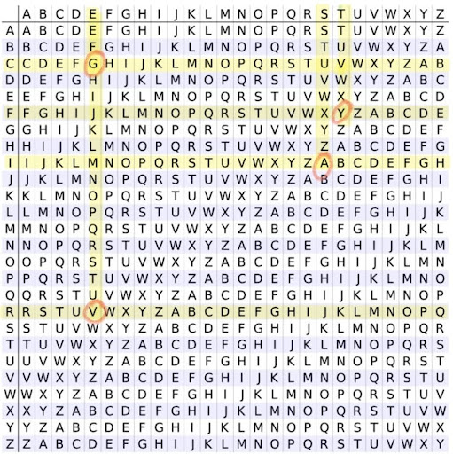

Cifra Vigenère
Segurança em Sistemas na Internet
O que são cifras?
Uma cifra é um método utilizado na criptografia para transformar uma mensagem legível em um formato codificado, garantindo que apenas pessoas autorizadas possam entendê-la.
As cifras são essenciais para proteger informações e garantir comunicações seguras na internet. Elas são utilizadas em diversas aplicações, como:
- Cifras de Substituição
- Cifras de Transposição
- Cifras Simétricas
- Cifras Assimétricas
- Comunicação segura em sites (HTTPS).
- Proteção de e-mails e mensagens criptografadas.
- Armazenamento seguro de senhas.
- Blockchain e assinaturas digitais.
O que são cifras polialfabéticas?
Cifra polialfabética é um tipo de cifra que usa vários alfabetos de substituição para codificar uma mensagem, o que a torna mais resistente a ataques de frequência. A Cifra de Vigenère é um dos exemplos mais conhecidos.
Como funciona?
A principal característica é o uso de vários alfabetos, então a mesma letra pode ser criptografada de modos diferentes na mensagem. É usada uma espécie de chave para determinar qual alfabeto será aplicado a cada letra.
A cada letra da mensagem original, um alfabeto de substituição diferente é selecionado com base na chave, e a letra é substituída pela letra correspondente nesse alfabeto.
Vantagens
- Dificulta ataques de frequência;
- É mais segura do que as cifras monoalfabéticas;
- Dificulta a quebra do código.
Desvantagens
- Se a chave usada for curta ou se repetir muitas vezes, a cifra pode ser quebrada por seu padrão;
- Pequenos erros ao cifrar ou decifrar podem causar grandes distorções na mensagem final.
Cifra Vigenère
A cifra de Vigenère, datada do século XVII, é um tipo de substituição polialfabética usada para criptografar um texto com o auxílio de uma palavra-chave. Essa cifra consiste, basicamente, em várias cifras de César aplicadas em sequência, com valores crescentes de deslocamento.
Para a criptografia, utiliza-se uma tabela de alfabetos, na qual o alfabeto é escrito 26 vezes em linhas diferentes. Cada linha representa uma versão do alfabeto deslocada ciclicamente uma posição para a esquerda em relação à anterior, correspondendo às 26 possíveis cifras de César. A primeira linha contém o alfabeto em sua sequência normal; a segunda linha corresponde a um deslocamento de +1 (L+1); a terceira, a um deslocamento de +2 (L+2); e assim por diante, até a última linha, que corresponde a um deslocamento de +25 (L+25). O alfabeto usado em cada ponto da criptografia depende de uma palavra-chave repetida ao longo do texto.
Dessa forma, constroi-se a seguinte tabela:
O texto codificado será formado a partir da interseção das letras do texto original (colunas) com as letras correspondentes da palavra-chave (linhas). A palavra-chave é repetida quantas vezes forem necessárias até o fim do texto.
Exemplo:
- Palavra Chave: CIFRA
- Frase a ser codificada: “este é um teste”
Como ela funciona?
Passo a Passo:
Primeiro, repetimos a palavra-chave "CIFRA" ao longo do texto a ser cifrado, para que cada letra tenha uma chave correspondente:
Texto: e s t e é u m t e s t e.
Chave: C I F R A C I F R A C I F R A C I
Agora, determinamos o deslocamento de cada letra da palavra-chave no alfabeto (A=0, B=1, C=2, ..., Z=25):
C → +2
I → +8
F → +5
R → +17
A → +0
Esse padrão de deslocamento se repete ao longo do texto.
Aplicamos os deslocamentos às letras do texto original. Para codificar, somamos o valor de deslocamento de cada letra da palavra-chave à letra do texto correspondente.
| Letra da frase a ser codificada | Letra correspondente da palavra-chave | Valor do deslocamento corresponde | Letra resultado da codificação |
|---|---|---|---|
| E | C | +2 | G |
| S | I | +8 | A |
| T | F | +5 | Y |
| E | R | +17 | V |
Exemplo de aplicação na tabela:
E continuamos esse processo para todas as letras da frase.
Frase codificada:
GAYV E WU YVSVN
Porque não podemos usar a Cifra Vigenère hoje em dia?
-
Fraqueza contra ataques de frequência
A cifra de Vigenère foi considerada segura por muito tempo, mas técnicas como o Kasiski Examination permitem descobrir o tamanho da chave e quebrar a criptografia facilmente. Como ela é uma cifra polialfabética, mas com um padrão repetitivo, podem identificar padrões no texto cifrado e deduzir a chave.
-
Vulnerabilidade a força bruta
Se a chave for curta ou reutilizada, pode ser testada diversas combinações até encontrar a correta. Diferente de criptografias modernas que usam chaves grandes e geradas aleatoriamente, a Vigenère é previsível.
-
Falta de resistência a ataques modernos
A Vigenère não tem mecanismos para proteger contra ataques baseados em computação avançada.
-
Uso limitado e desatualizado
A cifra de Vigenère é mais usada para fins educacionais ou desafios de criptografia, mas não em aplicações reais. Sistemas modernos exigem criptografia simétrica e assimétrica mais seguras, que garantem integridade e confidencialidade dos dados.
O resultado aparecerá aqui...